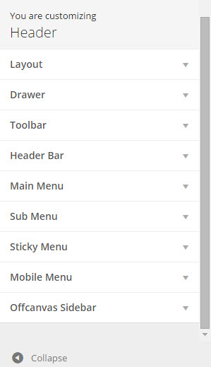
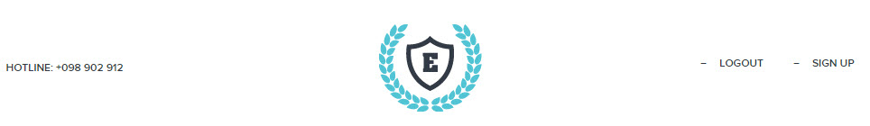
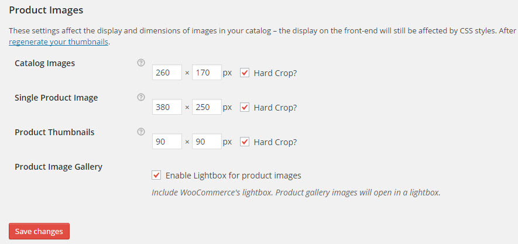

eLearning WP
Created: 06/05/2015
Latest update: 06/05/2015
By: ThimPress
Thank you for purchasing my theme. If you have any questions that are beyond the scope of this documentation, please feel free to request support at our Support Forum. Thanks so much!
FILE INCLUDES
- The theme zip file thimpress_eLearning_unzipme.zip.
{kind=link}
{kind=link}
{kind=link}
{kind=link}
{kind=link}
{kind=link}
{kind=link}
{kind=link}
{kind=link}
{kind=link}
CONFIGURATION
Customize
Customize
By clicking on the “Customize” menu under “Appearance”, you’ll be able to change all template specific settings.
There will appear:

Please note that, after configure something in customize, you need to click blue button <<Save & Publish>> to get the changes.
1. Logo:
2. Header Options:
- Layout
- Drawer
There are options to control an off canvas Top Drawer that can be used to nest widgets at the top of your page. Note that you need to Add a Widget to show Drawer. The guideline to Add a Widget will be expressed in the Widget Section bellow.
- Toolbar
Note that you need to Add a Widget to show Toolbar. The guideline to Add a Widget will be expressed in the Widget Section bellow.
There are options to configure Toolbar:
– Show or Hide Toolbar: Choose Show or Hide Toolbar.
– Width: You can choose the type “Wide” to make Toolbar overflow on your screen in full width, and “Boxed” to show it in a smaller fixed size.
– Font Size: The Font size for the widget in Toolbar.
– Background color: Select Background color for Toolbar.
– Text color: Select Text color for the widget in Toolbar.
– Link color: Selected color displayed when hover the mouse on the text in the Toolbar
– Left toolbar (width): Adjust Width for Toolbar.
- Header Bar
Note that you need to Add a Widget to show Header Bar. The guideline to Add a Widget will be expressed in the Widget Section bellow.

- Main Menu:
- Sub Menu:
This place to configure for Sub Menu such as Backgound color, Color Border of Sub Menu, Text color, Text color hover.
- Sticky Menu:
- Mobile Menu:
3. Footer Options
- Background Section Options
- Footer:
- Copyright Section Options
4. Styling Options
- Styling Layout Section Option:
Select a layout: choose to display your site in full width on the whole screen, or in a boxed zone with background color or pattern that you can customize in the next options.
- Styling Patterns Section Option:
- Background Color and Text Color
- FrontPage Section Display
– Select layout default:
This is the place for you to Select an alignment for your frontpages, which is the first display page in your site. You can choose whether or not to use the sidebar, as well as positioning it in a layout with 1 or 2 columns.
- Archive Section Display
This is the place for you to Select an alignment for your archiver pages, which are pages that list all your posts.

– Select Layout: You can select layout for Archive page, use sidebar or not.
– Default Layout: The default list or grid format as shown in archive page.
– Select Columns: This config will work for grid layout.
– Content Background: Select color for content Background in archive page.
– Hide/ Show Breadcrumb or Tittle: Check on to Show or Hide Breadcrumb or Tittle.
– Background Heading: Select Background Heading in Archive.
– Height Heading: Select Height Heading in Archive.
– Excerpt Length: Limit limited number of words in each article
– Show/ Hide Categories, Date, Author, Comment: check on it or not.
– Date Format: Format date in Archive.
– Select Paging Style: Select Paging Style.
- Posts And Pages Section Display
- Body Section Option:
- Tittle Section Option:
- Heading Section Option:
- Category Products
Here is where you can configure separately for Shop.
– Archive Layout: select a layout for your shop detail page with this option.
– Number of Products per Page: choose the number products shown in a page.
– You can show or Hide Breadcrumbs, Tittle in Shop page.
– Background Heading: click to choose Background Color or Background Image.
– Background Heading Color: select background color for heading.
– Background Heading Image: select background image for heading.
– Text color Heading: select color for text heading.
– Height Heading: adjust height of heading.
- Product Page
Here is where you can configure separately for Single Product.
- Setting

9. Widget:
To Add a Widget for Sidebar 1:
By clicking the Add a widget, a pop-up will show list of widgets to choose to add Sidebar 1.
To Add one Widget to another location such as: Menu Right, Footer 1, Footer 2, Footer 3, Footer 4, Copyright … you also do the same as above.
10. Custom Css:
To configure options under Customize section.
If you want to have a new site with similar settings as your created site. Use this function to export a file js in created site and import this file js into the new site.
WooCommerce Settings
Inside this panel you will find all core WooCommerce settings such as: catalog settings, pages, payment gateways, shipping methods and tax rates which are accessible via the tabs at the top of the screen.
To configure your shop go to “WooCommerce > Settings”, then browse through the tabs below to get more information on the WooCommerce Options and then click Save changes.
{kind=link}
For more details, please follow the official docs.
Product Thumbnail Settings
The Product thumbnail size is decided by Product Image settings in WooCommerce. To customize, open WooCommerce Settings menu, then switch to the “Products” >> “Display” >> “Product Image Sizes”

If you change these options after the images are set for your product, please re-generate your thumbnails to match the new settings by accessing the Tools >> Regen. Thumbnails menu and click on the <<Regenerate All Thumbnails>> button.
{kind=link}
{kind=link}
SET UP MENU
1. Go to Appearance >> Menu
{kind=link}
2. Select a menu to edit or click create a new menu.
Note: when you import our demo content, it will automatically create a Main menu for you, so select “Main Menu” if you want to have same menu as in preview.
3. Select pages or categories or links… from the left meta box and click Add to Menu
{kind=link}
On the right, feel free to drag and drop menu items to organize them.
4. Check Primary Menu for theme locations at the bottom of the page.

5. Click “save menu” button.
SET UP BLOG PAGE
1. Create a Blog page
- Go to Pages >> Add New page.
{kind=link}
- Setting Blog page
Go to Setting >> Reading

2. Add new Category and Tags
- To add new category for a blog, come to Posts > Categories and fill in fields then click Add New Category, there will appear:
{kind=link}
- To Add New Tag, come to Posts > Tags and fill in the fields then click Add New Tag:
{kind=link}
3. Create Menu for Blog page:
{kind=link}
.jpg){kind=link}
ELEMENT IN ELEARNING WP
Siteorigin
Siteorigin is the fantastic plugin, that adds a drag & drop page builder to your WordPress theme. It gives you the tools you need to be able to create complex page layouts without touching a single line of code. Read more at here
When editing a widget, on the right of the interface always shows a Widget Styles column consisting of Attributes, Layout, Design to help you configure for this widget.
When editing a widget, on the right of the interface always shows a Widget Styles column consisting of Attributes, Layout, Design to help you configure for this widget.
{kind=link}
Widget Class: a CSS class.
CSS Styles: CSS Styles, given as one per row.
Padding: Padding around the entire row.
Background Color: select Background color of the row.
Background Image: select Background image of the row.
Background Image Display: how the background image is displayed.
Border Color: Border color of the row.
Font Color: Color of text inside this widget.
Widget built by ThimPress
Asides from the default elements that Siteorigin provides, we also offer some special elements that are designed especially for WordPress shops built with Thimpress.
1. Thim: Icon box
This widget will add a fancy text boxes with icon and decoration to hightlight the content in your page. You can set this icon from an image that you upload, or select one from FontAwesome and change the color and size to get what you like.
{kind=link}
2. Thim: Our team

3. Thim: Popular Course
{kind=link}
4. Thim: Single images
{kind=link}
{kind=link}
{kind=link}
{kind=link}
{kind=link}
{kind=link}